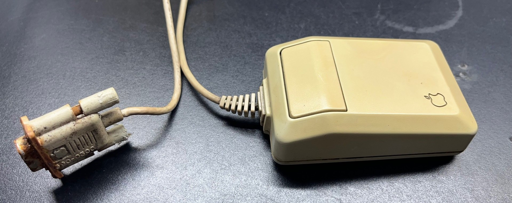
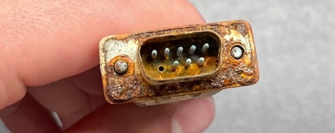
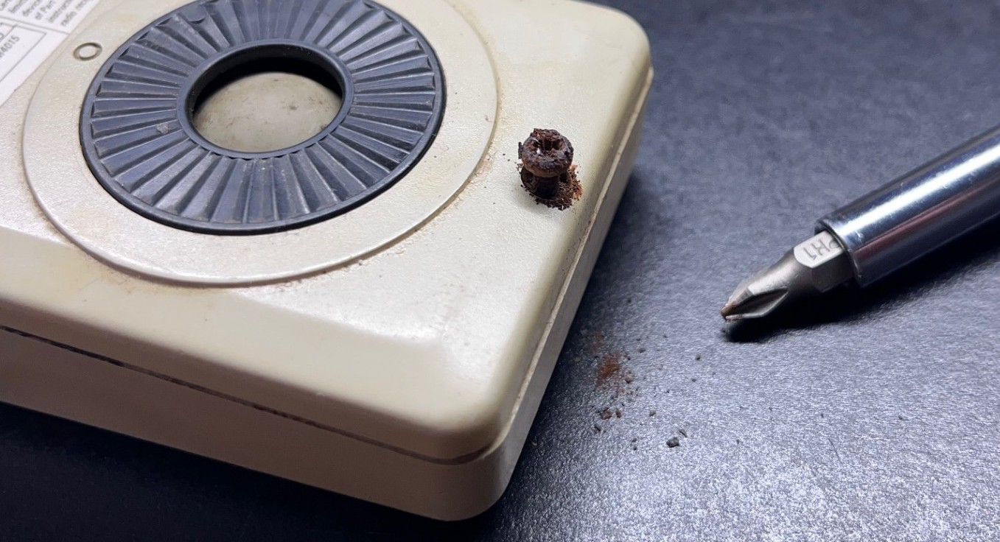

.... .. . s s s
+^""888h. ~"888h @88> :8 :8 :8
8X. ?8888X 8888f %8P u. u. .88 .88 u. u. u. .88
'888x 8888X 8888~ . u x@88k u@88c. .u :888ooo :888ooo ...ue888b x@88k u@88c. .u :888ooo
'88888 8888X "88x: .@88u us888u. ^"8888""8888" ud8888. -*8888888 -*8888888 888R Y888r ^"8888""8888" ud8888. -*8888888
`8888 8888X X88x. ''888E` .@88 "8888" 8888 888R :888'8888. 8888 8888 888R I888> 8888 888R :888'8888. 8888
`*` 8888X '88888X 888E 9888 9888 8888 888R d888 '88%" 8888 8888 888R I888> 8888 888R d888 '88%" 8888
~`...8888X "88888 888E 9888 9888 8888 888R 8888.+" 8888 8888 888R I888> 8888 888R 8888.+" 8888
x8888888X. `%8" 888E 9888 9888 8888 888R 8888L .8888Lu= .8888Lu= u8888cJ888 . 8888 888R 8888L .8888Lu=
'%"*8888888h. " 888& 9888 9888 "*88*" 8888" '8888c. .+ ^%888* ^%888* "*888*P" .@8c "*88*" 8888" '8888c. .+ ^%888*
~ 888888888!` R888" "888*""888" "" 'Y" "88888% 'Y" 'Y" 'Y" '%888" "" 'Y" "88888% 'Y"
X888^""" "" ^Y" ^Y' "YP' ^* "YP'
`88f
88

When I got the computer, the mouse's DB9 connector was fused to the rear IO of the Macintosh. The rust had formed a bond, and I had to use needle nose pliers to unscrew the thumb screws. The entire mouse was yellowed, with a very strange radial pattern on the right side that showed an uneven discoloring in the plastic (camera does not show it that well, it is very subtle). I plan on retrobriting this possibly indoors, which will be a first for me.

This is the DB9 connector. I will be cutting this entirely off and repurposing another DB9 connector. While I won't be able to match the original Apple branded moudling, I don't really care since this will be in the rear of the machine, and this machine is not a museum-grade piece to begin with anyways.

The screw on the bottom of the mouse shell was rusted, and I feared I may strip the screw. Thankfully it came out in one piece, and I was able to extract it. Straight to the trash with this one. I disasembled the mouse shell, button, and the PCB inside and gave them all a deep clean in the sinnk with dish soap and warm water. Because I did not want to desolder the XY axis rotary mouse assembly I decided to just place it in rubbing alchohol and let it dry.